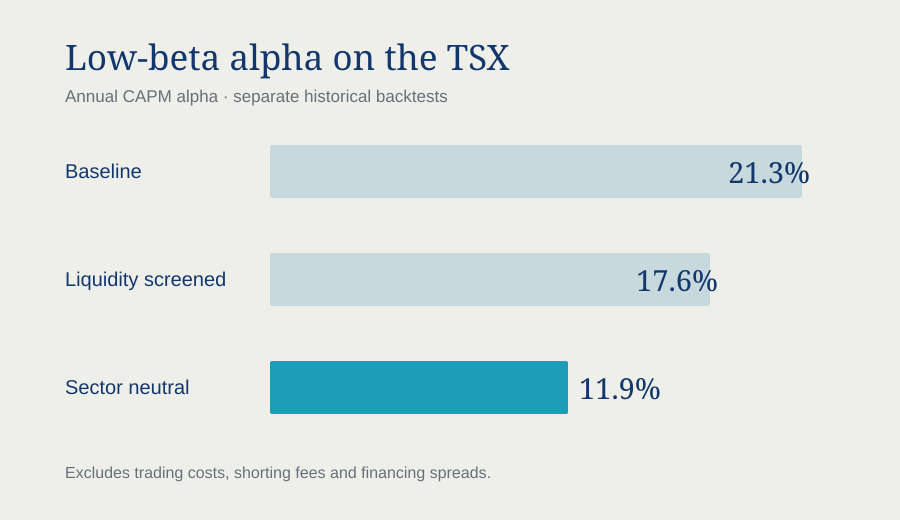

Betting against beta on the TSX
Does the low-beta anomaly show up in Canadian stocks? In my backtest, a sector-neutral version earned 11.9% annual CAPM alpha, against 21.3% for the unscreened baseline.
Historical backtest, 1999–2015 · separate specifications · before trading costs, shorting fees and financing spreads.
Investment researchRead the note ↗